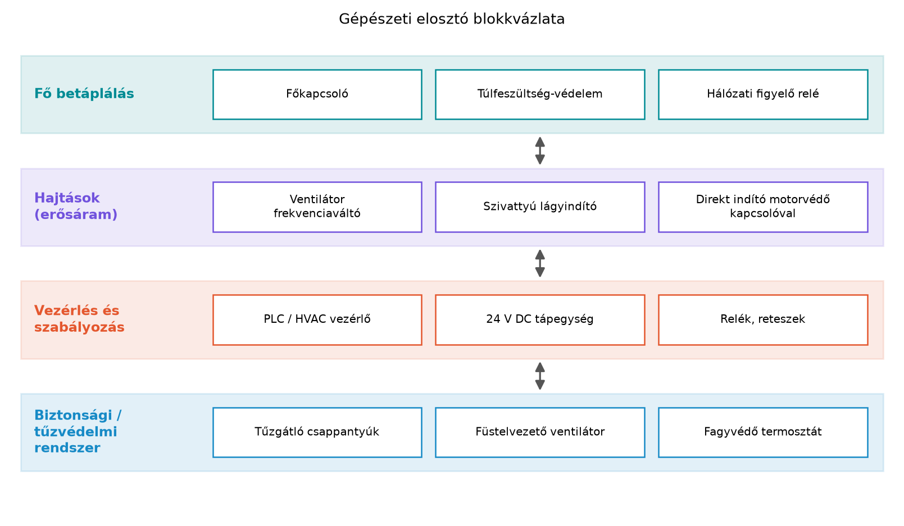

Egy ipari épületben a villanyszerelő gyakran úgy találkozik a gépészettel, hogy leraknak elé egy cső- és műszerezési tervet (P&ID), egy fogyasztói listát, és azt mondják: „ezt hozd össze egy kapcsolószekrényben”. A szellőztető ventilátor nem indulhat el, ha a fagyvédő termosztát hibát jelez. A fűtési keringtető szivattyúnak le kell állnia, ha a tűzjelző tüzet észlel. A hűtőkompresszornak nem szabad azonnal visszaindulnia egy áramszünet után, mert a hűtőkörben kiegyenlítődött a nyomás. Ha ezeket az összefüggéseket nem érted, hiába kötöd be szabályosan a mágneskapcsolót, a rendszer mégis tönkremegy, vagy egy tűz esetén életveszélyt okoz.
Ebben az alfejezetben a légtechnikai (HVAC), vízgépészeti és hőtechnikai berendezések elosztóinak felépítését, a tipikus ventilátor- és szivattyúvezérléseket, valamint a gépész és villamos szakma határfelületét tanulod meg. Ez azért kritikus, mert a Felvonó- és állandó üzemű fogyasztók elosztói alfejezetben az itt tanult reteszelési és határfelületi logikát fogod továbbvinni bonyolultabb rendszerekre.
Mielőtt a részletekbe mennénk, nézzük meg, milyen főbb egységekre oszlik egy tipikus gépészeti elosztó.

Ábraértelmezés. A fő betáplálásról indulnak a motoros hajtások. A vezérlési szint felülírja a hajtásokat: a PLC vagy a biztonsági relé letilthat egy kontaktort, ha a tűzgátló csappantyú nem nyitott ki, vagy ha a hőmérséklet túl alacsony.
A gépészeti elosztóban a leggyakoribb fogyasztók a ventilátorok és a szivattyúk. A villamos szerelő szempontjából ezek általában háromfázisú aszinkronmotorok, ezért a bekötésüknél a Motorvédelmek, lágyindítók és frekvenciaváltók az elosztóban alfejezetben tanult elveket alkalmazzuk, de itt a folyamat oldaláról is megvizsgáljuk őket.
A ventilátorokat elsősorban a frekvenciaváltó (VFD) vagy a lágyindító használata jellemzi, különösen a nagyobb teljesítményű, nagy tehetetlenségi nyomatékú, szíjhajtásos vagy közvetlen hajtású axiál- és radiálventilátoroknál. Miért?
Szabály. Ventilátoroknál a VFD-t jellemzően négyzetes (változó nyomatékú) U/f jelleggörbére vagy energiaoptimalizáló módra paraméterezzük, mert a terhelőnyomaték a fordulatszám négyzetével nő (ellenőrizendő: gyártói kézikönyv). Az alsó frekvenciahatárt (pl. 20–25 Hz) a minimális légmennyiség, a hővisszanyerő/fűtőregiszter védelme és a mechanikai rezonanciák határozzák meg; a felső határ jellemzően 50 Hz. A frekvenciaváltó kimenetén mágneskapcsolót csak akkor szabad alkalmazni, ha a gyártó megengedi, és a vezérlés biztosítja, hogy csak letiltott (nem moduláló) kimenetnél kapcsoljon; az üzem közbeni, terhelt bontás a kimenő tranzisztorok meghibásodását okozhatja (ellenőrizendő: gyártói kézikönyv).
A vízgépészeti szivattyúknál a legnagyobb gondot a vízlökés (nyomáslökés) okozza. Ha egy szivattyút direkt indítással kapcsolsz be, a csőhálózatban hirtelen nyomásugrás keletkezik, ami kalapácsütésként hangzik és tönkreteheti a csőbilincseket, szelepeket, sőt a szivattyú tömítéseit is. Még súlyosabb a hirtelen leállítás, amikor a megálló vízoszlop visszacsapja a visszacsapó szelepet (vízütés). Ezért a lágyindítót vagy a frekvenciaváltót szivattyúnál lassú indításra és szabályozott, lassú leállításra (soft stop) paraméterezzük.
Szabály. A nagyobb (1,5–2 kW feletti) szivattyúknál lágyindítót vagy frekvenciaváltót célszerű használni a nyomáslökés elkerülése érdekében. A lágyindító feszültség- vagy nyomatékvezérléssel fokozatosan gyorsítja fel a motort. A frekvenciaváltóval emellett a szivattyú fordulatszámát a nyomás vagy a térfogatáram függvényében szabályozhatjuk.
Tipikus szerelői hiba: A motorvédő kapcsolót a szivattyú tényleges áramfelvételének „ráhagyással” a névleges áram fölé állítják. Helyes: a beállítás a motor adattábláján szereplő névleges áram (szervizfaktorral rendelkező motornál a gyártó szerint – ellenőrizendő: adatlap). Ha az üzemi áram tartósan a névleges fölött van, a munkapontot (szelepállás, szűrő, járókerék) kell vizsgálni, nem a védelmet feljebb állítani; a névleges fölé állítva a motor tartós túlterhelés ellen nem védett.
Kapcsolási rajz. Az alábbi rajz egy szivattyú direkt (DOL) indításának vezérlőkörét mutatja szárazonfutás-védelemmel. A K1 13-14 önfenntartó érintkező a START gombbal (S1) párhuzamos, így a STOP (S0), a hőkioldó (F2 95-96) vagy a szárazonfutás-védő (B1) nyitása a tekercset elejti, és a motor leáll.
A gépészeti elosztóban találkozol a legegyszerűbb, termosztátos szabályozással, de a modern rendszereknél PLC vagy dedikált HVAC vezérlő dolgozik. A szerelő feladata az érzékelők és a beavatkozók (szelepmozgatók) bekötése és a jelzéslánc ellenőrzése.
A víz- és levegőhőmérséklet mérésére a leggyakoribb típusok:
Szabály. A 0–10 V-os és 4–20 mA-es jeleknél mindig árnyékolt, sodrott érpárú kábelt használj. Az árnyékolást csak az egyik oldalon, általában a vezérlőszekrényben kösd a PE-re vagy a jel-földre. Az érzékelők kábelét soha ne vezesd a motorokhoz menő, nagy zavartartalmú kábelekkel közös csatornában vagy kötegben.
A fűtési és hűtési körökben a hőcserélőkön, fűtőregisztereken, hűtőgerendákon átáramló víz mennyiségét motoros szabályozószelepek (két- vagy háromjáratú) szabályozzák. Két nagyon elterjedt típus:
Számítási példa (érzékelő bekötés): Egy Pt100 hőmérséklet-érzékelőt 50 m hosszú, 0,5 mm² keresztmetszetű réz vezetékkel kötünk be. A réz fajlagos ellenállása . Mekkora a vezeték ellenállása 2-vezetékes bekötés esetén? A vezeték teljes hossza oda-vissza m. A Pt100-as érzékelő ellenállása 0 °C-on 100 , 100 °C-on 138,5 . A hiba 0 °C-on hibát okoz. Ezért 2-vezetékes módon a Pt100-at nem kötjük be, csak 3- vagy 4-vezetékesen.
Figyelem. Ez a rész a gépészeti elosztó egyik legbiztonságkritikusabb területe. A pontos kialakítást a tűzvédelmi terv és a hatályos tűzvédelmi szabályok (OTSZ) határozzák meg. (ellenőrizendő: aktuális OTSZ előírások)
A szellőzőrendszerben a tűzgátló csappantyú akadályozza meg, hogy a füst és a tűz átterjedjen a csatornákon. A szerelő feladata:
Szabály. A tűzgátló csappantyúk vezérlőkábelének típusát (például funkciótartó kivitel) a tűzvédelmi terv és a rendszer határozza meg; füstelvezető/füstvédelmi csappantyúknál gyakori a funkciótartó kábel. A kábeltípus egy adott célra való megfelelősége a gyártói tanúsítványból és a tűzvédelmi tervezői kiírásból következik. (ellenőrizendő: érvényes kábeltanúsítvány)
Figyelem. A tűzgátló csappantyú motorjának kábelét TILOS erősáramú vezetékkel közös védőcsőben, kábelcsatornában vezetni.
A füstelvezető ventilátor feladata, hogy tűz esetén a füstöt és a hőt eltávolítsa. A specifikációja szigorúbb, mint egy normál légtechnikai ventilátoré:
Figyelem. Biztonsági berendezés áramkörében az áram-védőkapcsoló (FI-relé) alkalmazását a vonatkozó előírás korlátozhatja, mert a téves kioldás tűz alatt a funkció kiesését jelentené; az áramkör kialakítását a tűzvédelmi terv határozza meg. (ellenőrizendő: MSZ HD 60364-5-56, tűzvédelmi terv)
A legtöbb gyakorlati hiba itt keletkezik. A gépész tervadatokból, a villanyszerelő rajzokból dolgozik, és ami a kettő között nincs egyértelműen definiálva, az a szerelés során derül ki – rossz esetben rosszul.
Mi tartozik a gépészhez?
Mi tartozik a villanyszerelőhöz?
Szabály (határfelület). A gépész–villamos találkozási pontot mindig kapocslistával kell rögzíteni. A szerelés során az I/O-listát (Input/Output lista) használjuk. Ez tartalmazza:
Gyakorlati tipp: A kivitelezés megkezdése előtt mindig egyeztessük a gépész kollégával, hogy melyik érzékelőt ki szerel be, és hol van a határ. Pl. ha a gépész viszi a csőbe a hőmérő zsebet, akkor a villanyszerelő csak a betétet teszi bele.
Szabvány. A gépészeti elosztók kialakításánál is az MSZ EN 61439 szabványsorozatot kell alkalmazni a kapcsolóberendezésre. A berendezés belső huzalozására és védelmére a gépekre vonatkozó MSZ EN 60204-1 szabvány nyújt iránymutatást, még akkor is, ha nem fémmegmunkáló gépről van szó, mert a vezérlési logika és a védelmek hasonlóak. A tűzvédelmi elemekre a tűzvédelmi műszaki irányelvek és a forgalmazói megfelelőségi nyilatkozatok érvényesek. A folyamat oldaláról a gépész a P&ID-t adja, a villamos szerelő a villamos dokumentációt (kapcsolási rajz, I/O-lista). (ellenőrizendő: a konkrét MSZ EN 60204-1 és MSZ EN 61439 kiadása)
Megjegyzés. Az alfejezetben található 400 °C / 2 h érték a füstelvezető ventilátor hőállósági osztályára vonatkozik (pl. F400/120 – ellenőrizendő: MSZ EN 12101-3, MSZ EN 13501-4); ettől független a tápkábel funkciótartási ideje, amelyet a hazai gyakorlatban E30/E60/E90 (30/60/90 perc) jelöl (ellenőrizendő: OTSZ/TvMI, kábeltanúsítvány). Ez az érték és a frekvenciaváltó kimenetére vonatkozó tiltások tájékoztató jellegűek, a gyakorlatban a gyártói adatlap és a helyi tűzvédelmi tervező előírása a mérvadó.
Valós eset. Egy irodaház nyáron jelentette, hogy a klíma nem hűt eléggé, és a szellőzőgépházban furcsa búgás hallatszik. A karbantartó megmérte a ventilátor motorját: a motorvédő kapcsoló nem oldott le, de a frekvenciaváltó hibaüzenetet jelzett („OL1” – túláram). Az áramfelvétel a névleges 14 A helyett 18 A volt.
A hiba oka nem a villanyszerelőben volt, hanem a gépészben: a karbantartás után a légszűrő-betétet nem tették vissza, és a revíziós ajtó nyitva maradt: a rendszer ellenállása lecsökkent, ezért a ventilátor nagyobb térfogatáramon, nagyobb tengelyteljesítménnyel járt, és a motor nagyobb áramot vett fel (radiálventilátornál a teljesítményfelvétel a térfogatárammal nő; az eltömődött szűrő éppen csökkentené az áramot) (ellenőrizendő: ventilátor-jelleggörbe).
A tanulság: A gépészeti elosztóban a villamos védelem nemcsak a zárlat ellen véd, hanem a gépészeti hibák következményeit is el kell tűrnie vagy le kell kezelnie. Ilyenkor a frekvenciaváltó megfelelő beállítása (áramkorlátozás, fordulatszám-csökkentés) vagy a motorvédő kapcsoló helyes kalibrálása védte meg a motort a leégéstől.
A 0–10 V-os érzékelőt 230 V-os jellel közösvezetéken viszik. Miért rossz? A törpefeszültségű analóg jelre a 230 V-os vezeték kapacitív vagy induktív csatoláson keresztül zavart visz. A hőmérsékletérték ugrál, a rendszer rezegni kezd (a szelep folyamatosan nyit-zár). Helyes gyakorlat: Erősáramú és gyengeáramú jel csak szeparált csatornában vagy árnyékolt kábellel mehet.
A frekvenciaváltó és a motor közé kontaktort kötnek a motor leválasztására, és azt használják vészleállítónak. Miért rossz? A VFD kimenetének terhelt megszakítása túlfeszültséget indukál, ami tönkreteheti a tranzisztorokat. Helyes gyakorlat: A vészleállítás a VFD biztonsági bemenetét (STO – Safe Torque Off) aktiválja, vagy a bemeneti kontaktort oldja le, de a kimenetet nem terhelten szakítja meg.
Nem kötik be a tűzgátló csappantyú végállás-jelzőjét. Miért rossz? A tűzjelző központ nem tudja, hogy a csappantyú beszorult-e. Egy tűz esetén a rendszer azt hiszi, hogy a csappantyú zárva van, de a füst akadálytalanul terjed. Helyes gyakorlat: Az állásjelző kontaktusokat mindig sorba kell kötni a szellőztető vezérlésében és a tűzjelzőben.
1. feladat (A) Sorold fel a gépészeti elosztó négy fő rétegét (blokkvázlat alapján), és mindegyikhez nevezz meg egy tipikus elemet.
2. feladat (A) Egy szivattyú motorvédő kapcsolóját be kell állítani. A motor névleges árama 10 A. A szivattyú üzem közben mért árama 11 A. Mire állítod a motorvédő kapcsolót, és mit vizsgálsz?
3. feladat (B) Egy fűtési rendszerben egy 0–10 V-os szabályozó kimenetet használunk. A szelep 0 V-on zárva, 10 V-on teljesen nyitva van. A vezérlő 3,5 V-ot ad ki. A szelep útja 20 mm. Mekkora a szelep becsült nyitási pozíciója mm-ben?
4. feladat (B) Rajzold le (vagy írd le) egy szivattyú DOL (közvetlen) indítású vezérlésének kapcsolási rajzát önfenntartással, START/STOP nyomógombbal és hőkioldóval.
5. feladat (C) Egy légkezelő berendezésben a befúvó ventilátor 11 kW-os, névleges árama 21 A. A tervező frekvenciaváltót ír elő. Indokold meg, miért kell a frekvenciaváltó kimenetére külön fojtótekercset vagy szűrőt tenni, ha a motor kábele 80 m hosszú.
6. feladat (D) Egy hőcserélő fagyvédő termosztátja hibát jelez. A villanyszerelő megméri a termosztát kapcsait: a kapocsra kötött jel 0 V, a földhöz képest nem zárlatos. A PLC bemeneti kártyáján a LED nem világít. Ellenőrzés után kiderül, hogy a gépész a termosztátot a cső külső felületére szerelte, de a kábelt a szivattyú 400 V-os tápvezetékével közös csőben vezették. Hogyan lokalizálod a hibát, és mit javasolsz a megoldásra?
1. feladat megoldása A blokkvázlat rétegei: 1. Fő betáplálás: Főkapcsoló, hálózati figyelő relé, túlfeszültség-levezető. 2. Hajtások: Ventilátor frekvenciaváltó, szivattyú lágyindító, direkt motorvédelem. 3. Vezérlés és szabályozás: PLC/HVAC vezérlő, 24 V DC tápegység, relék, reteszek. 4. Biztonsági/tűzvédelmi rendszer: tűzgátló csappantyúk, füstelvezető ventilátor, fagyvédő termosztát.
2. feladat megoldása A motorvédő kapcsolót a motor adattáblai névleges áramára, 10 A-re kell állítani (a beállítási tartomány ellenőrzése után). A 11 A tartós üzemi áram a névleges fölött van: a túlterhelés okát kell keresni (a szivattyú munkapontja, szelepállás, eltömődött szűrő, mechanikai ellenállás, a motor alulméretezése), nem a védelmet feljebb állítani.
3. feladat megoldása A 0–10 V-os jel 0–20 mm mozgást vezérel. A 3,5 V a tartomány 35%-a (). Tehát a nyitás: .
4. feladat megoldása A DOL kapcsolás leírása: - Főáramkör: L1, L2, L3 -> Q1 (motorvédő vagy kismegszakító) -> K1 főérintkezői (1–2, 3–4, 5–6) -> F2 hőkioldó -> M1 (U1, V1, W1), PE a motortestre. - Vezérlőkör (230 V AC): L -> F1 vezérlőköri biztosító -> F2 95–96 (NC) -> S0 STOP (NC, 11–12) -> S1 START (NO, 13–14) -> K1 tekercs A1–A2 -> N. - A K1 13–14 önfenntartó érintkezője az S1 START-tal párhuzamos. - START: a K1 behúz, az önfenntartó érintkező zár, a motor elindul. STOP vagy a hőkioldó működése: a tekercs elejt, az önfenntartás megszűnik, a motor leáll.
5. feladat megoldása 80 m hosszú motorkábelnél a frekvenciaváltó kimenő feszültsége nagy frekvenciájú (2–16 kHz). A hosszú kábel kapacitása jelentős, a kábel visszaveri a jeleket. A gyors PWM-élek a kábelen visszaverődnek, és a motor kapcsain a közbenső köri feszültség közel kétszeresét elérő (gyártói adat szerint akár nagyobb) csúcsok léphetnek fel, amelyek a tekercsszigetelést károsítják; a kábel nagy kapacitásának töltőárama pedig a váltót terheli, és túláramhibát okozhat. A kimeneti fojtó vagy dU/dt szűrő ezt a feszültségcsúcsot korlátozza, így a motor és a frekvenciaváltó élettartama megnő.
6. feladat megoldása A hiba lokalizálása: Biztonsági korlát: a mérést csak jogosult személy, a műszer mérési kategóriájának megfelelően és az öt biztonsági szabály szerint végezze; a vezeték vizsgálatát feszültségmentesen kell végezni.
A gépészeti elosztó a ventilátorok, szivattyúk, fűtési és hűtési körök villamos háttere. A ventilátoroknál a frekvenciaváltó az energiahatékonyság miatt kulcsfontosságú, a teljesítmény a fordulatszám köbével arányos . A szivattyúknál a lágyindító a vízlökés ellen véd. A fűtés/hűtés szabályozásban az érzékelők (0–10 V, 4–20 mA, Pt100) bekötésénél az árnyékolásra kell ügyelni, a szelepmozgatók lehetnek 3-pontos vagy 0–10 V-os vezérlésűek. A tűzgátló csappantyúk és a füstelvezető ventilátor vezérlése biztonsági kritikus: a kábelnek funkciótartónak kell lennie, a vezérlést a tűzjelző központtal kell összekapcsolni. A gépész-villamos határfelületet mindig I/O-listával és kapocslistával rögzíteni kell. Továbbvitt eredmény. Az itt tanult blokkvázlat, a reteszelési logika és a gépész-villamos interfész az alapja a Felvonó- és állandó üzemű fogyasztók elosztói alfejezetben tárgyalt bonyolultabb tokozásoknak és biztonsági köröknek.
A fejezet az MSZ EN 61439 sorozatra, az MSZ EN 60204-1 szabványra, az MSZ HD 60364-5-56 szabványra (biztonsági célú berendezések), az OTSZ-re (54/2014. BM rendelet) és a vonatkozó TvMI-kre, az MSZ EN 13501-3/-4 szabványokra (funkciótartás, füstelvezető ventilátor), valamint a gyártói kézikönyvekre támaszkodik; mindegyik: (ellenőrizendő: aktuális kiadás, hatályos szöveg). A példaértékek oktatási célúak, a gyakorlatban a gyártói adatlap és a tűzvédelmi tervező előírása a mérvadó.